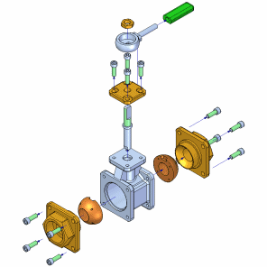

This tutorial demonstrates a typical workflow for creating an exploded assembly with Solid Edge and using the assembly explosion in a drawing. As you complete this tutorial, you will learn about exploding assemblies automatically and manually, and about repositioning and moving parts within an exploded view. You will also create a short animation of the exploded assembly view.
This is an intermediate tutorial. You might find it easier to follow if you first complete the Introduction to Part Modeling tutorial.
Estimated time to complete: 30 minutes
